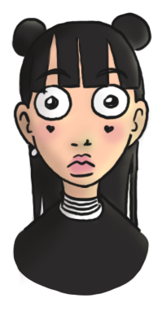

Ik ben gothic, ik heb een heel donkere stijl, ik hou van kinderen en ik werk als peuter juffrouw. Veel ouders zijn gaan klagen. Ze denken dat ik door mijn look een slechte invloed heb op hun kinderen,” zegt Sophie Segers, kleuterjuffrouw in Gemeentelijke Basisschool Anderlecht. “Het is niet aangenaam om telkens klachten te krijgen, maar zien dat de kinderen mij accepteren geeft mij de moed om verder te doen."
Sophie Segers 28 jaar Anderlecht